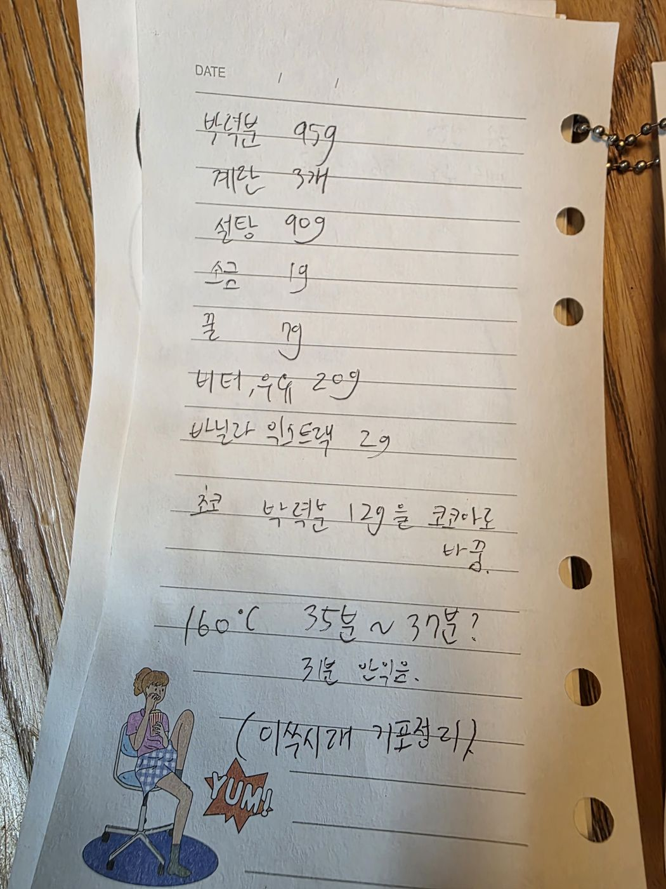

← 전체 레시피
케이크
🎂 제누와즈 (기본)
손으로 적은 노트를 그대로 옮긴 레시피입니다.
분량
1호 시트
굽기
160℃ · 35~37분
📷 원본 노트 사진 보기
재료
반죽
박력분 95g
계란 3개
설탕 90g
소금 1g
꿀 7g
버터 + 우유 20g
바닐라익스트랙 2g
초코 버전
박력분 중 12g을 코코아파우더로 대체
만드는 법
계란·설탕·소금·꿀을 휘핑한다.
체 친 박력분을 섞고, 데운 버터+우유를 넣는다.
이쑤시개로 기포를 정리한다.
160℃에서 35~37분 굽는다. (33분은 덜 익었음)

원본 노트 사진 — 탭하면 크게 볼 수 있어요